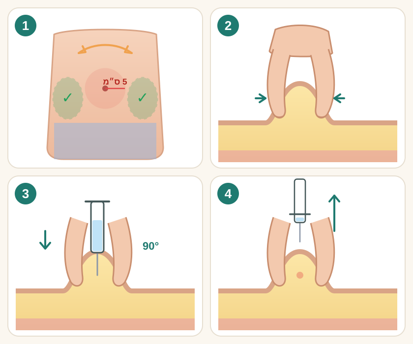

Уколы эноксапарина дома
Зачем нужны уколы
После операции на ноге, особенно после замены тазобедренного или коленного сустава и после переломов, повышается риск образования тромбов в венах ног. Поэтому врач может назначить уколы эноксапарина — например, Клексан или Крусия — и после выписки. Делайте их столько дней, сколько указано в выписке: не пропускайте дозы и не прекращайте раньше времени, иначе защита от тромбов уменьшится.
- Делайте укол сами, только если медсестра или врач показали вам, как это делается. Если вы не можете колоть себе сами, заранее договоритесь, кто будет помогать: родственник или медсестра поликлиники.
- Перед первым уколом дома прочитайте инструкцию именно к тому шприцу, который вам выдали. Ниже описана техника инъекции Крусии. У Клексана и других преднаполненных шприцев защитные механизмы могут отличаться. Если вам выдали препарат или шприц, который выглядит иначе, уточните у медсестры или фармацевта, как им пользоваться. Не меняйте самостоятельно препарат или дозу.
- Если у вас нарушена работа почек или раньше была серьёзная реакция на гепарин с уменьшением количества тромбоцитов, убедитесь, что лечащий врач знает об этом. При некоторых заболеваниях почек дозу эноксапарина необходимо изменять, а после определённых реакций на гепарин препарат может быть противопоказан. Самостоятельно менять дозу нельзя.
Перед уколом
- Перед каждым уколом проверьте название лекарства, назначенную дозу, срок годности и целостность шприца. Раствор должен быть прозрачным. Если шприц повреждён, срок годности истёк или раствор помутнел — не используйте его. Это помогает избежать ошибки с дозой и введения непригодного лекарства.
- Вымойте руки водой с мылом и хорошо вытрите их — это снижает риск инфекции в месте укола.
- Сядьте или лягте удобно.
- Выберите место на правой или левой стороне живота, не ближе 5 см от пупка.
- Не делайте укол в рубцы, синяки, болезненные, покрасневшие или отёчные участки. Если после предыдущего укола сохраняются выраженное покраснение, боль, отёк или выделения из кожи, сообщите медсестре или врачу. Это может указывать на местное осложнение.
- При каждой следующей инъекции выбирайте новое подходящее место на животе, чередуя правую и левую стороны. Не вводите препарат в синяки, уплотнения или раздражённые участки кожи. Это помогает уменьшить повторное повреждение одного и того же места.
- Протрите кожу спиртовой салфеткой или водой с мылом и дайте ей высохнуть.
Как сделать укол
- Правая или левая сторона живота, не ближе 5 см от пупка. Каждый раз меняйте сторону.
- Мягко соберите кожу живота в складку большим и указательным пальцами и держите её всё время укола.
- Введите иглу на всю длину в складку под прямым углом и медленно нажимайте на поршень, пока не введёте всё лекарство.
- Извлеките иглу прямо, не меняя направления.
- Осторожно снимите колпачок с иглы. Не касайтесь иглой ничего — она должна оставаться стерильной.
- Если готовый шприц содержит именно вашу назначенную дозу, не выпускайте пузырёк воздуха и не нажимайте на поршень перед уколом — иначе можно потерять часть лекарства. Если назначенная доза меньше содержимого шприца, самостоятельно изменять количество лекарства можно только после специального обучения у медсестры или врача.
- Возьмите шприц в ту руку, которой пишете. Другой рукой мягко соберите кожу живота в складку большим и указательным пальцами и держите складку всё время укола.
- Введите иглу на всю длину в складку кожи под прямым углом.
- Медленно нажимайте на поршень, пока не введёте всё лекарство.
- После введения всей дозы удерживайте палец на поршне и извлеките иглу прямо, не меняя направления. Направьте иглу от себя и окружающих. Только после извлечения иглы сильно нажмите на поршень, чтобы активировать защитную систему Крусии. Защитная оболочка закроет иглу, обычно со щелчком. После этого отпустите кожную складку. Это помогает избежать случайного укола использованной иглой.
- Не трите и не чешите место укола: от этого чаще появляются синяки.
После укола
- Использованный шприц сразу положите в специальный прочный контейнер для острых медицинских отходов. Не надевайте колпачок обратно, не используйте шприц повторно и не выбрасывайте его в обычное мусорное ведро. Это предотвращает случайные уколы иглой. Заранее уточните в поликлинике или аптеке, где получить контейнер и куда сдавать заполненный.
- Храните неиспользованные шприцы при температуре ниже 25 °C, не замораживайте и берегите от детей. Не оставляйте препарат в нагретой машине или под прямым солнцем. Неправильное хранение может повлиять на качество лекарства.
- Небольшой синяк или маленькое уплотнение в месте укола бывают часто и обычно проходят сами.
- Отмечайте каждый сделанный укол в календаре — так меньше риск забыть или повторить дозу.
Если пропустили укол или ошиблись с дозой
- Если вы забыли сделать укол Крусии, по инструкции производителя введите пропущенную дозу, как только вспомните. Не делайте двойную дозу в тот же день, чтобы восполнить пропуск: это повышает риск кровотечения. Если уже приближается время следующего укола или вы не уверены, вводили ли лекарство, уточните дальнейшую схему у врача или фармацевта.
- Если случайно ввели слишком большую или слишком маленькую дозу, сразу свяжитесь с врачом, медсестрой или фармацевтом, даже если чувствуете себя нормально. Не пытайтесь самостоятельно компенсировать ошибку ещё одним уколом: слишком большая доза повышает риск кровотечения.
Когда обращаться за помощью
- Эноксапарин уменьшает свёртываемость крови и повышает риск кровотечения. Если появилась кровь в моче, повторяющиеся носовые кровотечения или необычно большие синяки — обратитесь за медицинской помощью в тот же день. Если стул стал чёрным и дегтеобразным — немедленно обратитесь в приёмное отделение: это может быть признаком желудочно-кишечного кровотечения.
- При рвоте кровью, сильном кровотечении, которое не удаётся остановить, внезапной очень сильной головной боли, потере сознания или внезапной слабости одной стороны тела — немедленно звоните в скорую помощь по номеру 101. Это могут быть признаки опасного кровотечения, инсульта или другого неотложного состояния.
- Если после спинальной или эпидуральной анестезии, поясничной пункции либо операции на позвоночнике появились новая сильная боль по центру спины, онемение или нарастающая слабость ног, нарушение контроля мочеиспускания или стула — немедленно обратитесь в приёмное отделение. При быстром ухудшении звоните в скорую помощь по номеру 101.
- Если во время лечения вы упали и ударились головой, немедленно обратитесь в приёмное отделение, даже если пока чувствуете себя хорошо. На фоне лекарства возможны скрытые кровотечения.
- Если после укола появились отёк губ, языка или горла, затруднённое дыхание — немедленно звоните в скорую помощь по номеру 101: это может быть тяжёлая аллергическая реакция.
- Не добавляйте самостоятельно аспирин, ибупрофен и другие противовоспалительные лекарства: вместе с эноксапарином они повышают риск кровотечения. Если аспирин уже назначен врачом, не отменяйте его сами.
- Новая боль, отёк или покраснение икры — обратитесь за медицинской помощью в тот же день: это может быть тромб.
- Внезапная одышка или боль в груди — сразу звоните в скорую помощь по номеру 101.
Источники
זריקות אנוקסאפרין בבית
למה צריך את הזריקות
אחרי ניתוח ברגל, במיוחד אחרי החלפת מפרק ירך או ברך ואחרי שברים, עולה הסיכון להיווצרות קרישי דם בוורידי הרגליים. לכן הרופא עשוי לרשום זריקות אנוקסאפרין — למשל קלקסן או קרוסיה — גם אחרי השחרור. הזריקו אותן במשך מספר הימים המצוין במכתב השחרור: אל תדלגו על מנות ואל תפסיקו מוקדם, אחרת ההגנה מפני קרישים תפחת.
- הזריקו לעצמכם רק אם אחות או רופא הראו לכם איך עושים זאת. אם אינכם יכולים להזריק לעצמכם, תאמו מראש מי יעזור: בן משפחה או אחות בקופת החולים.
- לפני הזריקה הראשונה בבית קראו את ההוראות של המזרק המסוים שקיבלתם. הטכניקה שלהלן מתאימה לקרוסיה. לקלקסן ולמזרקים מוכנים אחרים יכולים להיות מנגנוני הגנה שונים. אם קיבלתם תרופה או מזרק שנראים אחרת, שאלו את האחות או הרוקח איך להשתמש בהם. אל תחליפו בעצמכם את התרופה או את המינון.
- אם תפקוד הכליות שלכם לקוי, או שהייתה לכם בעבר תגובה חמורה להפרין עם ירידה בטסיות הדם, ודאו שהרופא המטפל יודע על כך. בחלק ממחלות הכליות צריך לשנות את מינון האנוקסאפרין, ואחרי תגובות מסוימות להפרין התרופה עלולה להיות אסורה. אסור לשנות את המינון בעצמכם.
לפני הזריקה
- לפני כל זריקה בדקו את שם התרופה, המינון שנקבע, תאריך התפוגה ושהמזרק שלם. התמיסה צריכה להיות צלולה. אם המזרק פגום, התאריך עבר או התמיסה עכורה — אל תשתמשו בו. כך נמנעים מטעות במינון וממתן תרופה לא תקינה.
- שטפו ידיים במים ובסבון ונגבו אותן היטב — זה מפחית את הסיכון לזיהום במקום הזריקה.
- שבו או שכבו בנוחות.
- בחרו מקום בצד ימין או בצד שמאל של הבטן, במרחק של 5 ס"מ לפחות מהטבור.
- אל תזריקו לתוך צלקות, שטפי דם, או אזורים כואבים, אדומים או נפוחים. אם אחרי זריקה קודמת נשארו אדמומיות, כאב, נפיחות או הפרשה מהעור, ספרו לאחות או לרופא. זה יכול להצביע על סיבוך מקומי.
- בכל זריקה בחרו מקום מתאים חדש בבטן, והחליפו בין צד ימין לצד שמאל. אל תזריקו לתוך שטפי דם, אזורים נוקשים או עור מגורה. כך אפשר להפחית פגיעה חוזרת באותו מקום.
- נגבו את העור במגבון אלכוהול או במים וסבון ותנו לו להתייבש.
איך מזריקים

- צד ימין או צד שמאל של הבטן, במרחק של 5 ס"מ לפחות מהטבור. החליפו צד בכל פעם.
- אספו בעדינות קפל של עור הבטן בין האגודל לאצבע המורה, והחזיקו את הקפל לאורך כל הזריקה.
- החדירו את המחט לכל אורכה לתוך קפל העור, בזווית ישרה, ולחצו לאט על הבוכנה עד שכל התרופה הוזרקה.
- הוציאו את המחט ישר, באותו כיוון.
- הסירו בזהירות את מכסה המחט. אל תיגעו במחט בשום דבר — היא צריכה להישאר סטרילית.
- אם המזרק המוכן מכיל בדיוק את המינון שנקבע לכם, אל תוציאו את בועת האוויר ואל תלחצו על הבוכנה לפני הזריקה — אחרת עלול ללכת לאיבוד חלק מהתרופה. אם המינון שנקבע קטן מתכולת המזרק, מותר לשנות את כמות התרופה בעצמכם רק אחרי הדרכה מיוחדת של אחות או רופא.
- החזיקו את המזרק ביד שבה אתם כותבים. ביד השנייה אספו בעדינות קפל של עור הבטן בין האגודל לאצבע המורה, והחזיקו את הקפל לאורך כל הזריקה.
- החדירו את המחט לכל אורכה לתוך קפל העור, בזווית ישרה.
- לחצו לאט על הבוכנה עד שכל התרופה הוזרקה.
- אחרי הזרקת כל המנה השאירו את האצבע על הבוכנה והוציאו את המחט ישר, באותו כיוון. כוונו את המחט הרחק מכם ומאחרים. רק אחרי שהמחט בחוץ לחצו חזק על הבוכנה כדי להפעיל את מנגנון ההגנה של קרוסיה. השרוול המגן יכסה את המחט, בדרך כלל עם נקישה. אחר כך שחררו את קפל העור. כך נמנעת דקירה מקרית מהמחט המשומשת.
- אל תשפשפו ואל תגרדו את מקום הזריקה: זה מגביר את הסיכון לשטף דם.
אחרי הזריקה
- הכניסו את המזרק המשומש מיד למכל קשיח מיוחד לפסולת רפואית חדה. אל תחזירו את המכסה, אל תשתמשו במזרק שוב ואל תזרקו אותו לפח האשפה הרגיל. כך נמנעות דקירות מקריות. בררו מראש בקופת החולים או בבית המרקחת היכן לקבל מכל ולאן להחזיר אותו כשהוא מלא.
- אחסנו את המזרקים שלא נוצלו בטמפרטורה שמתחת ל־25°C, אל תקפיאו אותם והרחיקו אותם מילדים. אל תשאירו את התרופה ברכב חם או בשמש ישירה. אחסון לא נכון עלול לפגוע באיכות התרופה.
- שטף דם קטן או גוש קטן במקום הזריקה שכיחים, ובדרך כלל חולפים מעצמם.
- סמנו כל זריקה שעשיתם בלוח שנה — כך פוחת הסיכון לשכוח או לחזור על מנה.
אם דילגתם על זריקה או טעיתם במינון
- אם שכחתם זריקת קרוסיה, לפי הוראות היצרן הזריקו את המנה שנשכחה מיד כשנזכרתם. אל תזריקו מנה כפולה באותו יום כדי להשלים: זה מעלה את הסיכון לדימום. אם כבר מתקרב מועד הזריקה הבאה, או שאינכם בטוחים אם הזרקתם, בררו עם הרופא או הרוקח איך להמשיך.
- אם הזרקתם בטעות מנה גדולה מדי או קטנה מדי, פנו מיד לרופא, לאחות או לרוקח, גם אם אתם מרגישים טוב. אל תנסו לתקן את הטעות בעצמכם בזריקה נוספת: מינון גבוה מדי מעלה את הסיכון לדימום.
מתי לפנות לעזרה
- אנוקסאפרין מפחית את קרישת הדם ומעלה את הסיכון לדימום. אם הופיע דם בשתן, דימומים חוזרים מהאף או שטפי דם גדולים באופן חריג — פנו לקבלת טיפול רפואי עוד באותו יום. אם הצואה נעשתה שחורה ודמוית זפת — פנו מיד לחדר המיון: זה עלול להיות סימן לדימום במערכת העיכול.
- בהקאת דם, דימום חזק שאי אפשר לעצור, כאב ראש פתאומי וחזק מאוד, אובדן הכרה או חולשה פתאומית בצד אחד של הגוף — הזעיקו מיד אמבולנס במספר 101. אלה עלולים להיות סימנים לדימום מסוכן, לשבץ מוחי או למצב חירום רפואי אחר.
- אם עברתם הרדמה ספינלית או אפידורלית, ניקור מותני או ניתוח בעמוד השדרה, והופיעו כאב חדש וחזק במרכז הגב, חוסר תחושה או חולשה מתגברת ברגליים, או אובדן שליטה במתן שתן או ביציאות — פנו מיד לחדר המיון. במקרה של החמרה מהירה, הזעיקו אמבולנס במספר 101.
- אם במהלך הטיפול נפלתם ונחבלתם בראש, פנו מיד לחדר המיון, גם אם כרגע אתם מרגישים טוב. בזמן נטילת התרופה ייתכנו דימומים נסתרים.
- אם אחרי הזריקה הופיעו נפיחות בשפתיים, בלשון או בגרון, או קושי בנשימה — הזעיקו מיד אמבולנס במספר 101: זו יכולה להיות תגובה אלרגית חמורה.
- אל תוסיפו בעצמכם אספירין, איבופרופן ותרופות אחרות נוגדות דלקת: יחד עם אנוקסאפרין הן מעלות את הסיכון לדימום. אם הרופא כבר רשם לכם אספירין, אל תפסיקו אותו בעצמכם.
- כאב, נפיחות או אדמומיות חדשים בשוק — פנו לעזרה רפואית באותו יום: זה יכול להיות קריש דם.
- קוצר נשימה פתאומי או כאב בחזה — הזעיקו מיד אמבולנס במספר 101.
מקורות
حقن الإينوكسابارين في البيت
لماذا تحتاجون إلى الحقن
بعد عملية في الساق، خاصةً بعد استبدال مفصل الورك أو الركبة وبعد الكسور، يرتفع خطر تكوّن جلطات دموية في أوردة الساقين. لذلك قد يصف الطبيب حقن إينوكسابارين — مثل كليكسان أو كروسيا — بعد الخروج من المستشفى أيضًا. استمرّوا في إعطاء الحقن طوال المدّة المحدّدة في رسالة الخروج: لا تتخطّوا جرعات ولا توقفوها مبكرًا، وإلا قلّت الحماية من الجلطات.
- احقنوا أنفسكم فقط إذا أراكم الممرض أو الطبيب كيف يتم ذلك. إذا لم تستطيعوا حقن أنفسكم، اتفقوا مسبقًا مع من سيساعدكم: أحد الأقارب أو ممرضة العيادة.
- قبل أول حقنة في البيت اقرؤوا تعليمات المحقنة نفسها التي أُعطيت لكم. الطريقة الموصوفة أدناه خاصة بكروسيا. قد تختلف آليات الأمان في كليكسان وفي محاقن جاهزة أخرى. إذا أُعطيتم دواءً أو محقنة تبدو مختلفة، اسألوا الممرضة أو الصيدلي كيف تستخدمونها. لا تغيّروا الدواء أو الجرعة من تلقاء أنفسكم.
- إذا كانت لديكم مشكلة في وظائف الكلى، أو حدث لكم سابقًا رد فعل خطير على الهيبارين مع انخفاض عدد الصفائح الدموية، تأكّدوا من أن الطبيب المعالج يعرف ذلك. في بعض أمراض الكلى يجب تغيير جرعة الإينوكسابارين، وبعد ردود فعل معيّنة على الهيبارين قد يُمنع استخدام الدواء. لا يجوز تغيير الجرعة من تلقاء أنفسكم.
قبل الحقن
- قبل كل حقنة تحقّقوا من اسم الدواء والجرعة الموصوفة وتاريخ انتهاء الصلاحية وسلامة المحقنة. يجب أن يكون المحلول صافيًا. إذا كانت المحقنة تالفة أو انتهت صلاحيتها أو كان المحلول عكرًا — لا تستخدموها. هذا يساعد على تجنّب خطأ في الجرعة أو إعطاء دواء غير صالح.
- اغسلوا أيديكم بالماء والصابون وجفّفوها جيدًا — هذا يقلّل خطر العدوى في مكان الحقن.
- اجلسوا أو استلقوا بوضعية مريحة.
- اختاروا مكانًا في الجهة اليمنى أو اليسرى من البطن، على بُعد 5 سم على الأقل من السرّة.
- لا تحقنوا في الندوب أو الكدمات أو في مناطق مؤلمة أو محمرّة أو متورّمة. إذا بقي بعد الحقنة السابقة احمرار أو ألم أو تورّم أو إفرازات من الجلد، أخبروا الممرضة أو الطبيب. قد يدلّ ذلك على مضاعفة موضعية.
- عند كل حقنة اختاروا موضعًا مناسبًا جديدًا في البطن، وبدّلوا بين الجهة اليمنى واليسرى. لا تحقنوا في مواضع الكدمات أو التصلب أو تهيج الجلد. يساعد ذلك على تقليل تكرار الحقن في الموضع نفسه.
- امسحوا الجلد بمنديل كحولي أو بالماء والصابون واتركوه يجفّ.
كيف تُعطى الحقنة
- الجهة اليمنى أو اليسرى من البطن، على بُعد 5 سم على الأقل من السرّة. بدّلوا الجهة في كل مرة.
- اقرصوا بلطف ثنية من جلد البطن بين الإبهام والسبابة، وأمسكوا الثنية طوال مدة الحقن.
- أدخلوا الإبرة بكامل طولها في ثنية الجلد بزاوية قائمة، واضغطوا على المكبس ببطء حتى يُحقن كل الدواء.
- أخرجوا الإبرة بشكل مستقيم دون تغيير الاتجاه.
- انزعوا غطاء الإبرة بحذر. لا تدَعوا الإبرة تلمس أي شيء — يجب أن تبقى معقّمة.
- إذا كانت المحقنة الجاهزة تحتوي على جرعتكم الموصوفة بالضبط، فلا تُخرجوا فقاعة الهواء ولا تضغطوا على المكبس قبل الحقن — وإلا قد يضيع جزء من الدواء. إذا كانت الجرعة الموصوفة أقل من محتوى المحقنة، يجوز تغيير كمية الدواء بأنفسكم فقط بعد تدريب خاص من الممرضة أو الطبيب.
- أمسكوا المحقنة باليد التي تكتبون بها. وباليد الأخرى اقرصوا بلطف ثنية من جلد البطن بين الإبهام والسبابة، وأمسكوا الثنية طوال مدة الحقن.
- أدخلوا الإبرة بكامل طولها في ثنية الجلد بزاوية قائمة.
- اضغطوا على المكبس ببطء حتى يُحقن كل الدواء.
- بعد حقن الجرعة كاملة أبقوا الإصبع على المكبس وأخرجوا الإبرة بشكل مستقيم دون تغيير الاتجاه. وجّهوا الإبرة بعيدًا عنكم وعن الآخرين. فقط بعد إخراج الإبرة اضغطوا بقوة على المكبس لتفعيل نظام الأمان في كروسيا. سيغطي الغلاف الواقي الإبرة، عادةً مع صوت طقطقة. بعد ذلك اتركوا ثنية الجلد. هذا يساعد على تجنّب وخز عرضي بالإبرة المستعملة.
- لا تفركوا مكان الحقن ولا تحكّوه: هذا يزيد احتمال ظهور الكدمات.
بعد الحقن
- ضعوا المحقنة المستعملة فورًا في وعاء خاص متين للنفايات الطبية الحادة. لا تعيدوا الغطاء، ولا تستخدموا المحقنة مرة أخرى، ولا ترموها في سلة النفايات العادية. هذا يمنع الوخز العرضي بالإبرة. اسألوا مسبقًا في العيادة أو الصيدلية من أين تحصلون على الوعاء وأين تسلّمونه عندما يمتلئ.
- احفظوا المحاقن غير المستعملة في درجة حرارة أقل من 25 درجة مئوية، ولا تجمّدوها، وأبعدوها عن الأطفال. لا تتركوا الدواء في سيارة ساخنة أو تحت أشعة الشمس المباشرة. الحفظ غير الصحيح قد يؤثّر في جودة الدواء.
- الكدمة الصغيرة أو التكتّل الصغير في مكان الحقن شائعان ويزولان عادةً من تلقاء أنفسهما.
- سجّلوا كل حقنة أعطيتموها في التقويم — هكذا يقلّ خطر النسيان أو تكرار الجرعة.
إذا فاتتكم حقنة أو أخطأتم في الجرعة
- إذا نسيتم حقنة كروسيا، فبحسب تعليمات الشركة المصنّعة احقنوا الجرعة المنسية حالما تتذكّرون. لا تحقنوا جرعة مضاعفة في اليوم نفسه للتعويض: هذا يزيد خطر النزيف. إذا اقترب موعد الحقنة التالية، أو لم تكونوا متأكّدين إن كنتم قد حقنتم الدواء، استفسروا من الطبيب أو الصيدلي عن كيفية المتابعة.
- إذا حقنتم بالخطأ جرعة كبيرة جدًا أو صغيرة جدًا، اتصلوا فورًا بالطبيب أو الممرضة أو الصيدلي، حتى لو شعرتم بأنكم بخير. لا تحاولوا تعويض الخطأ بأنفسكم بحقنة أخرى: الجرعة الزائدة تزيد خطر النزيف.
متى يجب طلب المساعدة
- يقلّل الإينوكسابارين تخثّر الدم ويزيد خطر النزيف. إذا ظهر دم في البول، أو نزيف متكرّر من الأنف، أو كدمات كبيرة على غير العادة، فاطلبوا المساعدة الطبية في اليوم نفسه. إذا أصبح البراز أسود قطرانيًا، فتوجّهوا فورًا إلى قسم الطوارئ؛ فقد يكون علامة على نزيف في الجهاز الهضمي.
- عند تقيّؤ الدم، أو نزيف شديد لا يمكن إيقافه، أو صداع مفاجئ وشديد جدًا، أو فقدان الوعي، أو ضعف مفاجئ في جهة واحدة من الجسم — اتصلوا فورًا بالإسعاف على الرقم 101. قد تكون هذه علامات نزيف خطير أو سكتة دماغية أو حالة طبية طارئة أخرى.
- إذا خضعتم لتخدير نخاعي أو فوق الجافية أو لبزل قطني أو لجراحة في العمود الفقري، ثم ظهر ألم جديد وشديد في منتصف الظهر، أو خدر أو ضعف متزايد في الساقين، أو فقدان السيطرة على التبوّل أو التبرّز، فتوجّهوا فورًا إلى قسم الطوارئ. وإذا ساءت الحالة بسرعة فاتصلوا بالإسعاف على الرقم 101.
- إذا سقطتم خلال فترة العلاج وأُصيب رأسكم، توجّهوا فورًا إلى قسم الطوارئ، حتى لو شعرتم الآن بأنكم بخير. مع هذا الدواء قد يحدث نزيف خفي.
- إذا ظهر بعد الحقن تورّم في الشفتين أو اللسان أو الحلق، أو صعوبة في التنفّس — اتصلوا فورًا بالإسعاف على الرقم 101: قد يكون هذا رد فعل تحسّسيًا شديدًا.
- لا تضيفوا من تلقاء أنفسكم الأسبرين أو الإيبوبروفين أو أدوية أخرى مضادة للالتهاب: مع الإينوكسابارين تزيد هذه الأدوية خطر النزيف. إذا كان الطبيب قد وصف لكم الأسبرين، فلا توقفوه بأنفسكم.
- ألم أو تورّم أو احمرار جديد في ربلة الساق — اطلبوا المساعدة الطبية في اليوم نفسه: قد تكون جلطة دموية.
- ضيق تنفّس مفاجئ أو ألم في الصدر — اتصلوا فورًا بالإسعاف على الرقم 101.
المصادر
Enoxaparin injections at home
Why you need the injections
After an operation on the leg, especially after a hip or knee replacement and after fractures, the risk of blood clots in the leg veins goes up. So the doctor may prescribe enoxaparin injections — for example Clexane or Crusia — after you go home too. Give them for as many days as your discharge letter says: do not miss doses and do not stop early, otherwise the protection against clots is reduced.
- Inject yourself only if a nurse or doctor has shown you how to do it. If you cannot inject yourself, arrange in advance who will help: a relative or a community nurse, for example through your health fund (kupat holim).
- Before your first injection at home, read the instructions for the exact syringe you were given. The technique below is for Crusia. Clexane and other prefilled syringes may have different safety mechanisms. If you were given a medicine or syringe that looks different, ask the nurse or pharmacist how to use it. Do not change the medicine or the dose yourself.
- If your kidneys do not work well, or you have ever had a serious reaction to heparin with a drop in platelets, make sure your doctor knows. With some kidney conditions the enoxaparin dose must be changed, and after certain reactions to heparin the medicine may not be allowed. Never change the dose yourself.
Before the injection
- Before every injection, check the name of the medicine, the prescribed dose, the expiry date and that the syringe is undamaged. The solution should be clear. If the syringe is damaged, out of date or the solution is cloudy, do not use it. This helps avoid a dose error or giving a medicine that is not fit for use.
- Wash your hands with soap and water and dry them well — this lowers the risk of infection at the injection site.
- Sit or lie down comfortably.
- Choose a spot on the right or left side of your belly, at least 5 cm from the belly button.
- Do not inject into scars, bruises, or areas that are sore, red or swollen. If redness, pain, swelling or discharge from the skin remains after a previous injection, tell the nurse or doctor. This may be a sign of a local complication.
- Choose a new suitable injection site on your abdomen each time, alternating between the right and left sides. Do not inject into bruised, hardened or irritated skin. This helps avoid repeated injury to the same area.
- Wipe the skin with an alcohol wipe or with soap and water and let it dry.
How to give the injection
- Right or left side of the belly, at least 5 cm from the belly button. Change sides each time.
- Gently pinch a fold of belly skin between your thumb and index finger and hold it for the whole injection.
- Insert the whole length of the needle into the fold at a right angle and press the plunger slowly until all the medicine has gone in.
- Pull the needle straight out, without changing direction.
- Carefully pull off the needle cap. Do not let the needle touch anything — it must stay sterile.
- If the prefilled syringe contains exactly your prescribed dose, do not push out the air bubble and do not press the plunger before the injection — otherwise you may lose some of the medicine. If your prescribed dose is smaller than the contents of the syringe, change the amount yourself only after special training by a nurse or doctor.
- Hold the syringe in the hand you write with. With your other hand, gently pinch a fold of belly skin between your thumb and index finger, and hold the fold for the whole injection.
- Insert the whole length of the needle into the skin fold at a right angle.
- Press the plunger slowly until all the medicine has gone in.
- After the whole dose is in, keep your finger on the plunger and pull the needle straight out, without changing direction. Point the needle away from yourself and others. Only after the needle is out, press the plunger firmly to activate the Crusia safety system. The safety sleeve covers the needle, usually with a click. Then let go of the skin fold. This helps prevent an accidental needle-stick from the used needle.
- Do not rub or scratch the injection site: this makes bruising more likely.
After the injection
- Put the used syringe straight into a special strong container for sharp medical waste. Do not put the cap back on, do not reuse the syringe and do not throw it in the ordinary rubbish bin. This prevents accidental needle-sticks. Ask your clinic or pharmacy in advance where to get a container and where to return it when it is full.
- Store unused syringes below 25°C, do not freeze them, and keep them away from children. Do not leave the medicine in a hot car or in direct sunlight. Wrong storage can affect the quality of the medicine.
- A small bruise or a small lump at the injection site is common and usually goes away by itself.
- Mark each injection you give on a calendar — this lowers the risk of forgetting or repeating a dose.
If you missed an injection or made a dose error
- If you forgot a Crusia injection, the manufacturer’s instructions say to give the missed dose as soon as you remember. Do not give a double dose on the same day to make up for it: this increases the risk of bleeding. If it is nearly time for the next injection, or you are not sure whether you gave the medicine, ask your doctor or pharmacist what to do next.
- If you accidentally gave too much or too little, contact your doctor, nurse or pharmacist straight away, even if you feel fine. Do not try to make up for the error with another injection: too high a dose increases the risk of bleeding.
When to get help
- Enoxaparin reduces blood clotting and increases the risk of bleeding. If you notice blood in your urine, repeated nosebleeds, or unusually large bruises, seek medical help the same day. If your stools are black and tarry, go to the emergency department immediately: this may be a sign of bleeding in the digestive tract.
- If you vomit blood, have heavy bleeding that cannot be stopped, a sudden very severe headache, loss of consciousness or sudden weakness on one side of the body — call an ambulance on 101 immediately. These may be signs of serious bleeding, a stroke, or another medical emergency.
- If you have had spinal or epidural anesthesia, a lumbar puncture, or spine surgery, and develop new severe pain in the middle of your back, numbness or increasing weakness in your legs, or loss of bladder or bowel control, go to the emergency department immediately. If your condition worsens rapidly, call an ambulance on 101.
- If you fall and hit your head during treatment, go to the emergency department immediately, even if you feel well for now. Hidden bleeding is possible while you take this medicine.
- If after an injection your lips, tongue or throat swell or you have difficulty breathing — call an ambulance on 101 immediately: this may be a severe allergic reaction.
- Do not add aspirin, ibuprofen or other anti-inflammatory medicines on your own: together with enoxaparin they increase the risk of bleeding. If your doctor has already prescribed aspirin, do not stop it yourself.
- New pain, swelling or redness in the calf — get medical help the same day: it may be a blood clot.
- Sudden shortness of breath or chest pain — call an ambulance on 101 straight away.